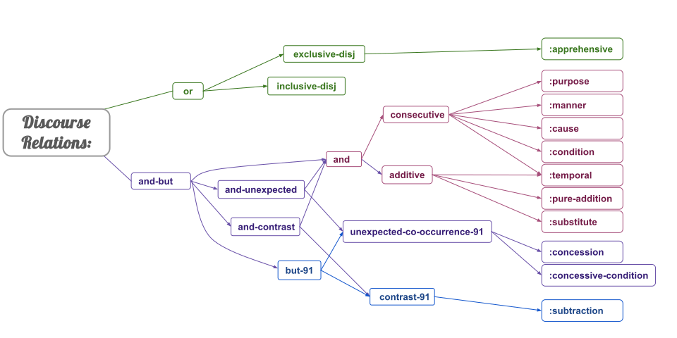

(Current as of June 2025.)
| Discourse Relation | Definition |
|---|---|
(o / or
|
Construes two (or more) events or entities as being alternatives of each other in some way. I will go for a walk or play some soccer. (o / or :op1 (w / walk-01 :ARG0 (p / person :refer-person 1st :refer-number Singular) :aspect process :modal-strength full-affirmative) :op2 (p2 / play-01 :ARG0 p :ARG1 (s / soccer) :aspect process :modal-strength full-affirmative)) |
(e / exclusive-disj
|
Indicates that the construed alternatives are presented as mutually exclusive options. You can have coffee or tea [but not both]. (h / have-03 :ARG0 (p / person :refer-person 2nd :refer-number singular) :ARG1 (e / exclusive-disj :op1 (c / coffee) :op2 (t / tea)) :aspect state :modal-strength partial-affirmative) |
:apprehensive:apprehensive-of(h / have-apprehensive-91
|
Two events are mutually exclusive alternatives, but more specifically, one event is carried out with the intention of preventing the other event from happening. Grab a stick lest he attack you! (g / grab-01 :mode imperativis :ARG0 (p / person :refer-person 2nd :refer-number singular) :ARG1 (s / stick :refer-number singular) :apprehensive (a / attack-01 :ARG0 (p2 / person :refer-person 3rd :refer-number singular) :ARG1 p :aspect performance :modal-strength full-affirmative) :aspect performance :modal-strength partial-affirmative) |
(i / inclusive-disj
|
Indicates that either any of the construed alternatives can be chosen individually or in combination. If we go down to a 'crazy place' to bash pandanus, husk and eat corn, or plant bananas, we don't sleep with women. mnu'bo hatai-supi'ba-ve kire'bo kro-de-supi'ba-ve egemo bre-supi'ba-ve degi kiko-pi' rmi-supamo a-ki' a'-vo-g-une pandanus bash-PURP.1PL-NONEX corn husk-eat-PURP.1PL-NONEX banana plant-PURP.1PL-NONEX crazy place-in (h / have-condition-91 :ARG1 (a / a'vogune-00 'sleep' :actor (p / person :refer-person 1st :refer-number plural) :companion (a2 / aki') 'woman' :aspect habitual :modal-strength full-negative) :ARG2 (r / rmisupamo-00 'go down' :actor p :goal (k / kikopi' 'place' :mod (d / degi)) 'crazy' :purpose (i / inclusive-disj :op1 (h2 / hataisupi'bave-00 'bash' :actor p :undergoer (m / mnu'bo) 'pandanus' :aspect performance :modal-strength full-affirmative) :op2 (k2 / krodesupi'bave-00 'husk and eat' :actor p :undergoer (k3 / kire'bo) 'corn' :aspect performance :modal-strength full-affirmative) :op3 (b / bresupi'bave-00 'plant' :actor p :undergoer (e / egemo) 'banana' :aspect performance :modal-strength full-affirmative)) :aspect performance :modal-strength full-affirmative)) |
(a / and-but
|
For languages that conflate addition and contrast. |
(a / and
|
General addition. I like coffee and tea. (l / like-01 :ARG0 (p / person :refer-person 1st :refer-number singular) :ARG1 (a / and :op1 (c / coffee) :op2 (t / tea)) :aspect state :modal-strength full-affirmative) |
(c / consecutive
|
Expresses two or more events as a complex figure, with additional information on their temporal and/or logical sequencing. I boiled the water and poured it into my cup. (a / and :op1 (b / boil-01 :ARG0 (p / person :refer-person 1st :refer-number singular) :ARG1 (w / water) :aspect performance :modal-strength full-affirmative) :op2 (p2 / pour-01 :ARG0 p :ARG1 w :ARG2 (c / cup :possessor p) :aspect performance :modal-strength full-affirmative)) |
:purpose:purpose-of(h / have-purpose-91:ARG1 main event :ARG2 purpose) |
Expresses the intention on the part of the agent of one event towards bringing about another event. I grabbed a stick in order to defend myself. (g / grab-01 :ARG0 (p / person :refer-person 1st :refer-number singular) :ARG1 (s / stick :refer-number singular) :purpose (d / defend :ARG0 p :ARG1 p :aspect performance :modal-strength full-affirmative) :aspect performance :modal-strength full-affirmative) |
:manner:manner-of(h / have-manner-91:ARG1 main event :ARG2 manner) |
Expresses a relation where one event accompanies another and characterizes more specifically what happened (or didn’t happen) in another event. He got into the army by lying about his age. (g / get-05 :ARG1 (p / person :refer-person 3rd :refer-number singular) :ARG2 (a / army) :manner (l / lie-08 :ARG0 p :ARG1 (t / thing :ARG2-of (h / have-age-91 :ARG1 p)) :aspect performance :modal-strength full-affirmative) :aspect performance :modal-strength full-affirmative) |
:cause:cause-of(h / have-cause-91:ARG1 main event :ARG2 cause) |
Expresses a relation between a causing event and a resulting event, where the former explicitly brings about the latter. Sarah moved back to California because she couldn't find a job in Washington. (m / move-01 :ARG0 (p / person :name (n / name :op1 "Sarah)) :ARG2 (c / country-partition :wiki "California" :name (n2 / name :op1 "California)) :ARG1-of (b / back-17) :cause (f / find-01 :polarity - :ARG0 p :ARG1 (j / job) :place (c2 / country-partition :wiki "Washington" :name (n3 / name :op1 "Washington")) :aspect state :modal-strength full-negative) :aspect performance :modal-strength full-affirmative) |
:condition:condition-of(h / have-condition-91
|
Expresses a relation where one event is contingent upon the occurrence of another event. If you touch it, it might explode. (e / explode-01 :ARG1 (t / thing :refer-number singular) :condition (t2 / touch-01 :ARG0 (p / person) :ARG1 t :aspect performance :modal-strength full-affirmative) :aspect performance :modal-strength neutral-affirmative) |
:temporal:temporal-of(h / have-temporal-91:ARG1 main event :ARG2 temporal phrase) |
Expresses that one event takes place before, after, or at the same time as another. This can either be expressed through an adverbial construction with the earlier event in the main clause and the later event in a subordinate clause, or through iconicity of tense in coordinated clauses. I fed my dog before going to the office. (f / feed-01 :ARG0 (p / person :refer-person 1st :refer-number singular) :ARG2 (d / dog :possessor p :refer-number singular) :temporal (b / before :op1 (g / go-01 :ARG1 p :ARG4 (o / office :refer-number singular) :aspect performance :modal-strength full-affirmative)) :aspect performance :modal-strength full-affirmative) |
(a / additive
|
Expresses the addition of one ‘figure’ (foregrounded participant or event) to another one in order to form a complex figure. |
:pure-addition:pure-addition-of(h / have-pure-addition-91
|
Expresses no temporal specification of the sequencing of events, but rather that the two events that form a complex figure cannot occur separately from each other in the context of the utterance. In addition to having your hand stamped, you have to show your ticket to get into the concert. (h / have-04 :ARG0 (p / person :refer-person 2nd :refer-number singular) :ARG1 (s / stamp-01 :ARG0 (p2 / person) :ARG1 (h2 / hand :part p) :aspect performance :modal-strength partial-affirmative) :pure-addition (s2 / show-01 :ARG0 p :ARG1 (t / ticket :possessor p :refer-number singular) :ARG2 (p3 / person) :aspect performance :modal-strength partial-affirmative) :purpose (g / get-05 :ARG0 p :ARG2 (c / concert :refer-number singular) :aspect performance :modal-strength full-affirmative) :aspect performance :modal-strength partial-affirmative) |
:substitute:substitute-of(h / have-substitute-91
|
Expresses that one of the events that together form a complex figure is offered as an 'alternative' or 'replacement' for the other-- this is typically expressed through the negation of one of the two coordinands. Instead of going out to eat, we barbecued chicken at home. (b / barbecue-01 :ARG0 (p / person :refer-person 1st :refer-number plural) :ARG1 (c / chicken) :place (h / home) :substitute (g / go-out-17 :ARG0 p :purpose (e / eat-01 :ARG0 p :aspect endeavor :modal-strength full-affirmative) :aspect performance :modal-strength full-negative) :aspect performance :modal-strength full-affirmative) |
(a / and-unexpected
|
Ambiguous between unexpected-co-occurrence, :concession, and :concessive-condition. |
(u / unexpected-co-occurence-91
|
Juxtaposition between 2 events where the 2nd event is unexpected in the case the first occurs Vanja caught a cold but went to school. Vanja prostudilsja, no poshël v shkolu Vanja caught_cold CONJ went to school (u / unexpected-co-occurrence-91 :ARG1 (p / prostudilsja-00 'catch a cold' :experiencer (p2 / person :name (n / name :op1 "Vanja")) :aspect performance :modal-strength full-affirmative) :ARG2 (p3 / poshël-00 'go' :actor p2 :goal (s / shkolu) 'school' :aspect performance :modal-strength full-affirmative)) |
:concession:concession-of(h / have-concession-91
|
Expresses a relation between two events towards which the speaker has a positive epistemic stance (i.e. the speaker believes they both occurred/will occur), but specifies that this co-occurrence is unexpected. Even though he was broke, he bought a new guitar. (b / buy-01 :ARG0 (p / person :refer-person-person 3rd :refer-number singular) :ARG1 (g / guitar :mod (n / new) :ref-number singular) :concession (h / have-mod-91 :ARG1 p :ARG2 (b2 / broke) :aspect state :modal-strength full-affirmative) :aspect performance :modal-strength full-affirmative) |
:concessive-condition:concessive-concession-of(h / have-concessive-concession-91
|
Expresses that the state of affairs described in the apodosis will be true under the entire range of conditions described in the protasis. These are different from regular conditionals in that they imply an expectation that the event expressed in the protasis may not lead to the event expressed in the apodosis happening. Even if you arrive only 5 minutes late, you will be fired. (f / fire-02 :ARG1 (p / person :refer-person 2nd :refer-number singular) :aspect performance :modal-strength full-affirmative :concessive-condition (a / arrive-01 :ARG1 p :temporal (l / late :extent (t / temporal-quantity :quant 5 :unit (m / minute))) :aspect performance :modal-strength full-affirmative)) |
(a / and-contrast
|
Ambiguous between addition, contrast and subtraction. |
(c / contrast-91
|
Expresses a relation of contrast in some way between events, without an element of unexpectedness. Peter is diligent, but Vanja is lazy. Petja staratel'nyi, a Vanja lenivyj Peter diligent CONJ Vanja lazy (c / contrast-91 :ARG1 (h / have-mod-91 :ARG1 (p / person :name (n / name :op1 "Peter")) :ARG2 (s / staratel'nyi) 'diligent' :aspect state :modal-strength full-affirmative) :ARG2 (h2 / have-mod-91 :ARG1 (p2 / person :name (n2 / name :op1 "Vanja")) :ARG2 (l / lenivyj 'lazy') :aspect state :modal-strength full-affirmative)) |
:subtraction:subtraction-of(h / have-subtraction-91
|
One event is additionally characterized by the absence of a second event that is normally a part of the first event. People don't own tigers, except for Joe Exotic. (o / own-01 :polarity - :ARG0 (p / person :refer-person plural) :ARG1 (t / tiger :refer-number plural) :subtraction (p2 / person :name (n / name :op1 "Joe" :op2 "Exotic")) :aspect state :modal-strength full-negative) |